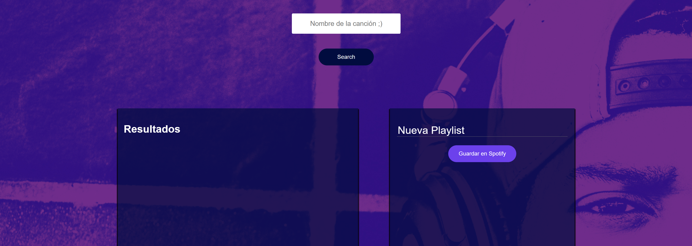

Sobre mí
Soy un futuro Ingeniero Full-Stack. Actualmente estudio Formación Profesional y complemento mi aprendizaje con cursos en Codecademy. Tengo 18 años y vivo en Aragón, España. Soy una persona sorda, pero gracias a los audífonos puedo escuchar y comunicarme con mayor facilidad, lo que me permite llevar una vida normal.
Desde pequeño he sido una persona activa. Practiqué fútbol hasta los 14 años y, más adelante, me he formado en disciplinas como Taekwondo, Kickboxing y Jiu-jitsu. Me apasiona el deporte y llevo una vida organizada y equilibrada.
Los valores son fundamentales para mí. Creo firmemente en la disciplina, el esfuerzo y la superación personal. Cuando finalice mi formación como Ingeniero Full-Stack, tengo claro que emprenderé un camino que muchos no se atreven a recorrer.
Mis proyectos
Aquí hay algunos de los proyectos en los que he trabajado:
- Proyecto 1: Con React, Css y Html creé un App web con la Api de Spotify para permitir realizar búsquedas de canciones y crear listas de reproducción en Spotify. Aquí puedes ver el código: GitHub 
- Proyecto 2: Con Html y Css creé un diseño web responsivo utilizando Flexbox.

- Proyecto 3: Con Html y Css creé un diseño web inicial sobre una cafetería utilizando Flexbox.

Habilidades
Mis habilidades incluyen:
- HTML, CSS, JavaScript
- React
- Node.js
- Git y GitHub
- Trabajo en equipo y comunicación efectiva